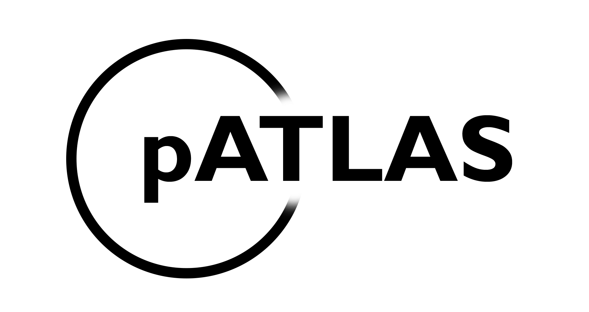
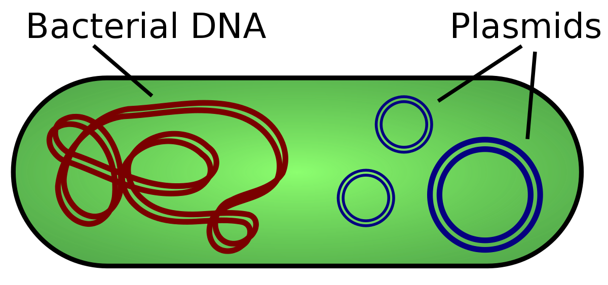
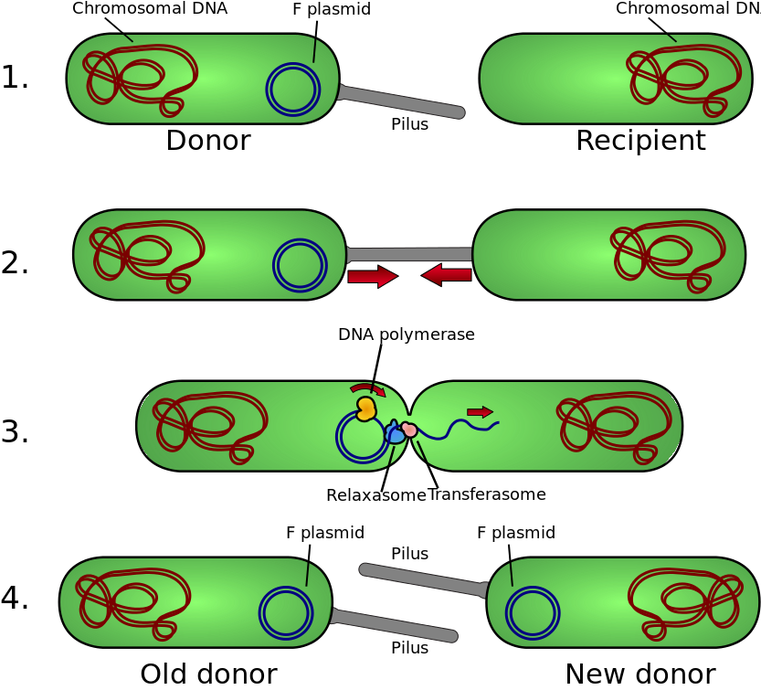
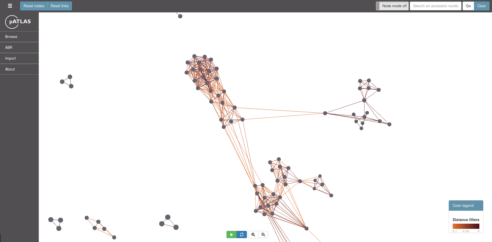
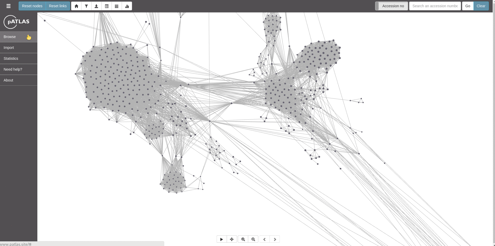
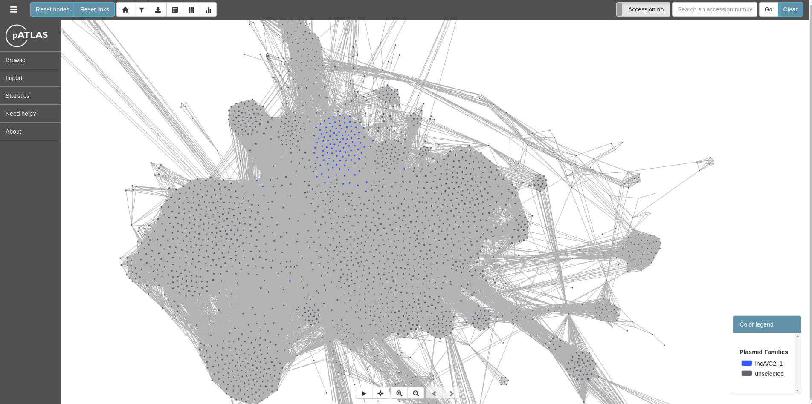
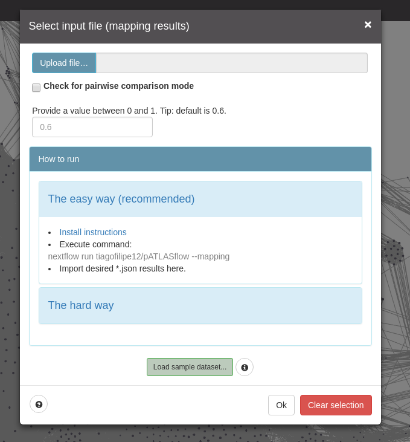
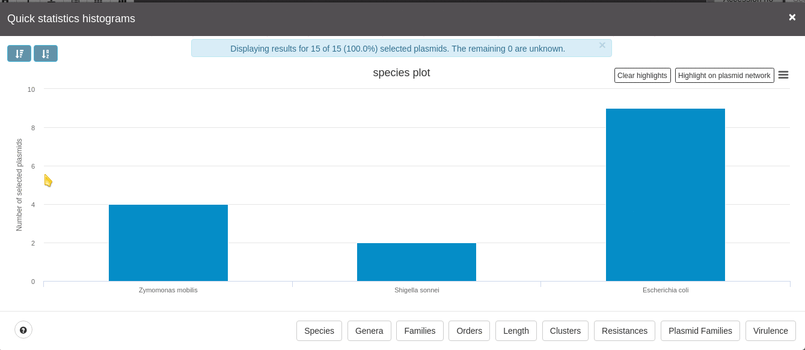

pATLAS: the hitchhikers guide to the plasmid
galaxy
Jesus TF, Ribeiro-Gonçalves B, Silva DN, Valeria B, Ramirez M,
Carriço JA
Plasmids
- Extrachromosomal linear or circular DNA
- Mosaicism (between strains, species
and genera)
- Highly modular and chimeric

Plasmids
- Mobile Elements
- Key components in horizontal gene transfer
- They often carry genes that may benefit
the survival of the organism (e.g antibiotic resistance)

Why
- Available tools (disclaimer: these
are not people's names)
- Assembly-based
- cBar
- PlasmidFinder
- plasmidSPAdes
- PlasmidTron
- Recycler
pATLAS - Browse
- Initial visualization:

pATLAS - Browse
- Other metadata:
- Distance - mash distance between two
plasmids
- Length - The size in bp of the
plasmids
- Size ratio - The difference in size
between two plasmids

pATLAS - Browse
- Browse by resistance genes:

pATLAS - Browse
- Other annotations:
- Plasmid families - PlasmidFinder
- Virulence - VFDB

pATLAS - Import
- Mapping results
- Mash screen results
- Assembly/Mash dist screen results

pATLAS - Import
- Results example

pATLAS - Statistics
- Taxa
- Length
- Annotations
